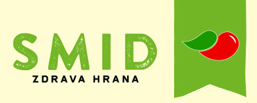

Naslovnica
Vijesti
Kontakt
O nama
Galerija
Galerija
Dvije vrste senfa u ponudi, s kurkumom i pikantni
Jabučni chutney, savršen umak za jela s roštilja.
Hrenada, savršeni spoj hrena, jabuke i đumbira.
Pesto od tikvica, odlična baza za jela s tjesteninom.
Jabučni ocat, neizostani dio svake salate.